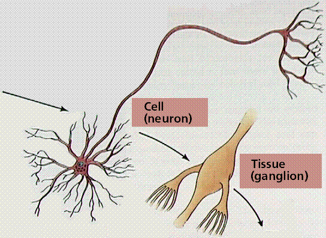
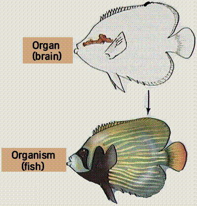
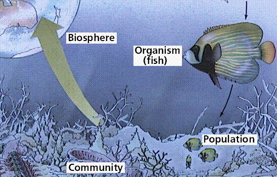
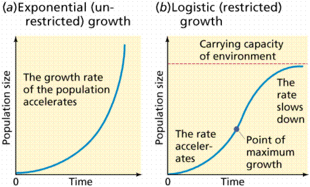
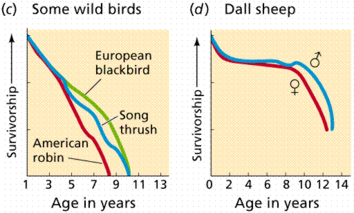
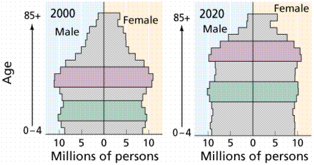
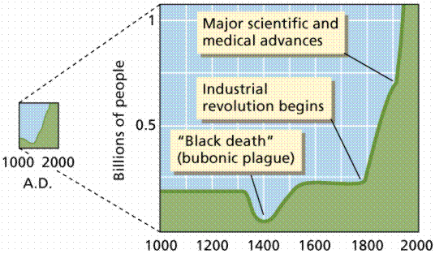
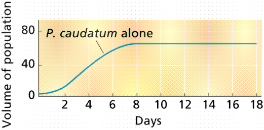
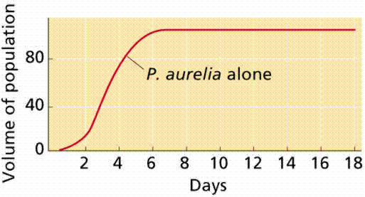
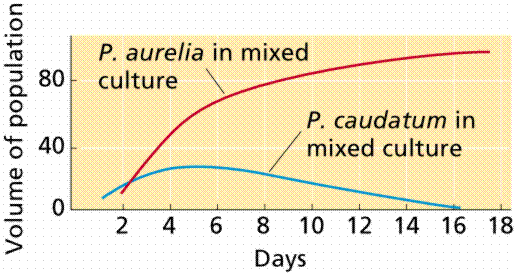

Ecology | Population Growth | Altering Population Growth | Range and Density | Links
In previous chapters/units we have concentrated on the biology of the individual cell, tissue, and organism. There are levels of organization above the individual organism that will be the subject of this unit. Individual organisms are grouped into populations, which in turn form communities, which form ecosystems. Ecosystems make up the biosphere, which includes all life on Earth. If there is life on other planets, will we need another level of organization?
Biosphere: The sum of all living things taken in conjunction with their environment. In essence, where life occurs, from the upper reaches of the atmosphere to the top few meters of soil, to the bottoms of the oceans. We divide the earth into atmosphere (air), lithosphere (earth), hydrosphere (water), and biosphere (life).
Ecosystem: The relationships of a smaller groups of organisms with each other and their environment. Scientists often speak of the interrelatedness of living things. Since, according to Darwin's theory, organisms adapt to their environment, they must also adapt to other organisms in that environment. We can discuss the flow of energy through an ecosystem from photosynthetic autotrophs to herbivores to carnivores.
Community: The relationships between groups of different species. For example, the desert communities consist of rabbits, coyotes, snakes, birds, mice and such plants as sahuaro cactus (Carnegia gigantea), Ocotillo, creosote bush, etc. Community structure can be disturbed by such things as fire, human activity, and over-population.
Species: Groups of similar individuals who tend to mate and produce viable, fertile offspring. We often find species described not by their reproduction (a biological species) but rather by their form (anatomical or form species).
Populations: Groups of similar individuals who tend to mate with each other in a limited geographic area. This can be as simple as a field of flowers, which is separated from another field by a hill or other area where none of these flowers occur.
Individuals: One or more cells characterized by a unique arrangement of DNA "information". These can be unicellular or multicellular. The multicellular individual exhibits specialization of cell types and division of labor into tissues, organs, and organ systems.
Organ System: (in multicellular organisms). A group of cells, tissues, and organs that perform a specific major function. For example: the cardiovascular system functions in circulation of blood.
Organ: (in multicellular organisms). A group of cells or tissues performing an overall function. For example: the heart is an organ that pumps blood within the cardiovascular system.
Tissue: (in multicellular organisms). A group of cells performing a specific function. For example heart muscle tissue is found in the heart and its unique contraction properties aid the heart's functioning as a pump. .
Cell: The fundamental unit of living things. Each cell has some sort of hereditary material (either DNA or more rarely RNA), energy acquiring chemicals, structures, etc. Living things, by definition, must have the metabolic chemicals plus a nucleic acid hereditary information molecule.
Organelle: A subunit of a cell, an organelle is involved in a specific subcellular function, for example the ribosome (the site of protein synthesis) or mitochondrion (the site of ATP generation in eukaryotes).
Molecules, atoms, and subatomic particles: The fundamental functional levels of biochemistry.



Organization levels of life, in a graphic format. Images from Purves et al., Life: The Science of Biology, 4th Edition, by Sinauer Associates (www.sinauer.com) and WH Freeman (www.whfreeman.com), used with permission.
It is thus possible to study biology at many levels, from collections of organisms (communities), to the inner workings of a cell (organelle).
Ecology is the study how organisms interact with each other and their physical environment. These interactions are often quite complex. Human activity frequently disturbs living systems and affects these interactions. Ecological predictions are, of a consequence, often more general than we would like.
A population is a group of individuals of the same species living in the same geographic area. The study of factors that affect growth, stability, and decline of populations is population dynamics. All populations undergo three distinct phases of their life cycle:
Population growth occurs when available resources exceed the number of individuals able to exploit them. Reproduction is rapid, and death rates are low, producing a net increase in the population size.
Population stability is often proceeded by a "crash" since the growing population eventually outstrips its available resources. Stability is usually the longest phase of a population's life cycle.
Decline is the decrease in the number of individuals in a population, and eventually leads to population extinction.
Nearly all populations will tend to grow exponentially as long as there are resources available. Most populations have the potential to expand at an exponential rate, since reproduction is generally a multiplicative process. Two of the most basic factors that affect the rate of population growth are the birth rate, and the death rate. The intrinsic rate of increase is the birth rate minus the death rate.

Two modes of population growth. The Exponential curve (also known as a J-curve) occurs when there is no limit to population size. The Logistic curve (also known as an S-curve) shows the effect of a limiting factor (in this case the carrying capacity of the environment). Image from Purves et al., Life: The Science of Biology, 4th Edition, by Sinauer Associates (www.sinauer.com) and WH Freeman (www.whfreeman.com), used with permission.
The age within it's individual life cycle at which an organism reproduces affects the rate of population increase. Life history refers to the age of sexual maturity, age of death, and other events in that individual's lifetime that influence reproductive traits. Some organisms grow fast, reproduce quickly, and have abundant offspring each reproductive cycle. Other organisms grow slowly, reproduce at a late age, and have few offspring per cycle. Most organisms are intermediate to these two extremes.

Population curves. a) three hypothetical populations (labelled I, II, and III); b, c, and d) three real populations. Note that the real curves approximate one of the three hypotheticals. Images from Purves et al., Life: The Science of Biology, 4th Edition, by Sinauer Associates (www.sinauer.com) and WH Freeman (www.whfreeman.com), used with permission.
Age structure refers to the relative proportion of individuals in each age group of a population. Populations with more individuals aged at or before reproductive age have a pyramid-shaped age structure graph, and can expand rapidly as the young mature and breed. Stable populations have relatively the same numbers in each of the age classes.
Comparison of the population age structuire in the United States and Mexico. Note the deographic bulge in the Mexican population. The effects of this buldge will be felt for generations. Image from Purves et al., Life: The Science of Biology, 4th Edition, by Sinauer Associates (www.sinauer.com) and WH Freeman (www.whfreeman.com), used with permission.

The Baby Boomers and Gen X. As the population bulge, the baby Boomers born after World War II, aged and began to have children of their own this created a secondary bulge termed Generation X. What happens when the Generation X members begin to have their own children? Image from Purves et al., Life: The Science of Biology, 4th Edition, by Sinauer Associates (www.sinauer.com) and WH Freeman (www.whfreeman.com), used with permission.
Human populations are in a growth phase. Since evolving about 200,000 years ago, our species has proliferated and spread over the Earth. Beginning in 1650, the slow population increases of our species exponentially increased. New technologies for hunting and farming have enabled this expansion. It took 1800 years to reach a total population of 1 billion, but only 130 years to reach 2 billion, and a mere 45 years to reach 4 billion.
Despite technological advances, factors influencing population growth will eventually limit expansion of human population. These will involve limitation of physical and biological resources as world population increased to over six billion in 1999. The 1987 population was estimated at a puny 5 billion.

Human population growth over the past 10,000 years. Note the effects of worldwide disease (the Black death) and technological advances on the populatiuon size. Images from Purves et al., Life: The Science of Biology, 4th Edition, by Sinauer Associates (www.sinauer.com) and WH Freeman (www.whfreeman.com), used with permission.
Limits on population growth can include food supply, space, and complex interactions with other physical and biological factors (including other species). After an initial period of exponential growth, a population will encounter a limiting factor that will cause the exponential growth to stop. The population enters a slower growth phase and may eventually stabilize at a fairly constant population size within some range of fluctuation. This model fits the logistic growth model. The carrying capacity is the point where population size levels off.
Relationship between carrying capacity (K) and the population density over time. Image from Purves et al., Life: The Science of Biology, 4th Edition, by Sinauer Associates (www.sinauer.com) and WH Freeman (www.whfreeman.com), used with permission.
The environment is the ultimate cause of population stabilization. Two categories of factors are commonly used: physical environment and biological environment. Three subdivisions of the biological environment are competition, predation, and symbiosis.
Physical environment factors include food, shelter, water supply, space availability, and (for plants) soil and light. One of these factors may severely limit population size, even if the others are not as constrained. The Law of the Minimum states that population growth is limited by the resource in the shortest supply.
The biological role played by a species in the environment is called a niche. Organisms/populations in competition have a niche overlap of a scarce resource for which they compete. Competitive exclusion occurs between two species when competition is so intense that one species completely eliminates the second species from an area. In nature this is rather rare. While owls and foxes may compete for a common food source, there are alternate sources of food available. Niche overlap is said to be minimal.
Paramecium aurelia has a population nearly twice as large when it does not have to share its food source with a competing species. Competitive release occurs when the competing species is no longer present and its constraint on the winner's population size is removed.



Graphs showing competition between two species of Paramecium. Since each population alone prospers (yop two graphs), when they are in a competition situation one species will win, the other will lose (bottom graph). Images from Purves et al., Life: The Science of Biology, 4th Edition, by Sinauer Associates (www.sinauer.com) and WH Freeman (www.whfreeman.com), used with permission..
Predators kill and consume other organisms. Carnivores prey on animals, herbivores consume plants. Predators usually limit the prey population, although in extreme cases they can drive the prey to extinction. There are three major reasons why predators rarely kill and eat all the prey:
Fluctuations in predator (wolf) and prey (moose) populations over a 40-year span. Note the effects of declines in the wolf population in the late 1960s and again in the early 1980s on the moose population. Image from Purves et al., Life: The Science of Biology, 4th Edition, by Sinauer Associates (www.sinauer.com) and WH Freeman (www.whfreeman.com), used with permission.
Symbiosis has come to include all species interactions besides predation and competition. Mutualism is a symbiosis where both parties benefit, for example algae (zooxanthellae) inside reef-building coral. Parasitism is a symbiosis where one species benefits while harming the other. Parasites act more slowly than predators and often do not kill their host. Commensalism is a symbiosis where one species benefits and the other is neither harmed nor gains a benefit: Spanish moss on trees, barnacles on crab shells. Amensalism is a symbiosis where members of one population inhibit the growth of another while being unaffected themselves.
Natural populations are not governed by a single control, but rather have the combined effects of many controls simultaneously playing roles in determining population size. If two beetle species interact in the laboratory, one result occurs; if a third species is introduced, a different outcome develops. The latter situation is more like nature, and changes in one population may have a domino effect on others.
Which factors, if either, is more important in controlling population growth: physical or biological? Physical factors may play a dominant role, and are called density independent regulation, since population density is not a factor The other extreme has biological factors dominant, and is referred to as density dependent regulation, since population density is a factor. It seems likely that one or the other extreme may dominate in some environments, with most environments having a combination control.
Extinction is the elimination of all individuals in a group. Local extinction is the loss of all individuals in a population. Species extinction occurs when all members of a species and its component populations go extinct. Scientists estimate that 99% of all species that ever existed are now extinct. The ultimate cause of decline and extinction is environmental change. Changes in one of the physical factors of the environment may cause the decline and extinction; likewise the fossil record indicates that some extinctions are caused by migration of a competitor.
Dramatic declines in human population happen periodically in response to an infectious disease. Bubonic plague infections killed half of Europe's population between 1346 and 1350, later plagues until 1700 killed one quarter of the European populace. Smallpox and other diseases decimated indigenous populations in North and South America.
Human populations have continued to increase, due to use of technology that has disrupted natural populations. Destabilization of populations leads to possible outcomes:
Agriculture and animal domestication are examples of population increase of favored organisms. In England alone more than 300,000 cats are put to sleep per year, yet before their domestication, the wild cat ancestors were rare and probably occupied only a small area in the Middle East.
Pollutants generally are (unplanned?) releases of substances into the air and water. Many lakes often have nitrogen and phosphorous as limiting nutrients for aquatic and terrestrial plants. Runoff from agricultural fertilizers increases these nutrients, leading to runaway plant growth, or eutrophication. Increased plant populations eventually lead to increased bacterial populations that reduce oxygen levels in the water, causing fish and other organisms to suffocate.
Removal of a competing species can cause the ecological release of a population explosion in that species competitor. Pesticides sprayed on wheat fields often result in a secondary pest outbreak as more-tolerant-to-pesticide species expand once less tolerant competitors are removed.
Predator release is common where humans hunt, trap, or otherwise reduce predator populations, allowing the prey population to increase. Elimination of wolves and panthers have led to increase in their natural prey: deer. There are more deer estimated in the United States than there were when Europeans arrived. Large deer populations often cause over grazing that in turn leads to starvation of the deer.
Introduction of exotic or alien non-native species into new areas is perhaps the greatest single factor to affect natural populations. More than 1500 exotic insect species and more than 25 families of alien fish have been introduced into North America; in excess of 3000 plant species have also been introduced. The majority of accidental introductions may fail, however, once an introduced species becomes established, its population growth is explosive. Kudzu, a plant introduced to the American south from Japan, has taken over large areas of the countryside.
Kudzu covering a building (left) and closeup of the flowers and leaves (right). Images from http://www.alltel.net/~janthony/kudzu/, photographs by Jack Anthony, used with permission.
Humans can remove or alter the constraints on population sizes, with both good and bad consequences. On the negative side, about 17% of the 1500 introduced insect species require the use of pesticides to control them. For example, African killer bees are expanding their population and migrating from northward from South America. These killer bees are much more agressive than the natives, and destroy native honeybee populations.
On a positive note, human-induced population explosions can provide needed resources for growing human populations. Agriculture now produces more food per acre, allowing and sustaining increased human population size.
Human action is causing the extinction of species at thousands of times the natural rate. Extinction is caused by alteration of a population's environment in a harmful way. Habitat disruption is the disturbance of the physical environment of a species, for example cutting a forest or draining wetlands. Habitat disruption in currently the leading cause of extinction.
Changes in the biological environment occur in three ways.
Overkill is the shooting, trapping, or hunting of a species usually for sport or economic reasons. Unfortunately, this cannot eliminate "pest" species like cockroaches and mice due to their large population sizes and capacity to reproduce more rapidly than we can eliminate them. However, many large animals have been eliminated or had their populations drastically reduced (such as tigers, elephants, and leopards).
The death of one species or population can cause the decline or elimination of others, a process known as secondary extinction. Destruction of bamboo forests in China, the food for the giant panda, may cause the extinction of the panda. The extinction of the dodo bird has caused the Calviera tree to become unable to reproduce since the dodo ate the fruit and processed the seeds of that tree.
Giant pandas eat an estimated 10,000 pounds of bamboo per panda per year. Image of a giant panda eating bamboo from http://www.bonus.com/contour/Save_our_Earth/http@@/library.thinkquest.org/2988/e-animals.htm#Giant Panda.
Even if a number of individuals survive, the population size may become too small for the species to continue. Small populations may have breeding problems. They are susceptible to random environmental fluctuations and genetic drift to a greater degree than are larger populations. The chance of extinction increases exponentially with decreasing population size.
The minimum viable population (MVP) is the smallest population size that can avoid extinction by the two reasons listed above. If no severe environmental fluxes develop for a long enough time, a small population will recover. The MVP depends heavily on reproductive rates of the species.
Populations tend to have a maximum density near the center of their geographic range. Geographic range is the total area occupied by the species. Outlying zones, where conditions are less optimal, include the zone of physiological stress (where individuals are rare), and eventually the zone of intolerance (where individuals are not found).
The environment is usually never uniform enough to support uniform distribution of a species. Species thus have a dispersion pattern. Three patterns found include uniform, clumped, and random.
Geographic ranges of species are dynamic, over time they can contract or expand due to environmental change or human activity. Often a species will require another species' presence, for example Drosophila in Hawaii. Species ranges can also expand due to human actions: brown trout are now found worldwide because of the sprerad of trout fishing.
All text contents ©1995, 2000, 2001, by M.J. Farabee. Use
for educational purposes is heartily encouraged.
Email: mj.farabee@emcmail.maricopa.edu
Last modified:
The URL of this page is: